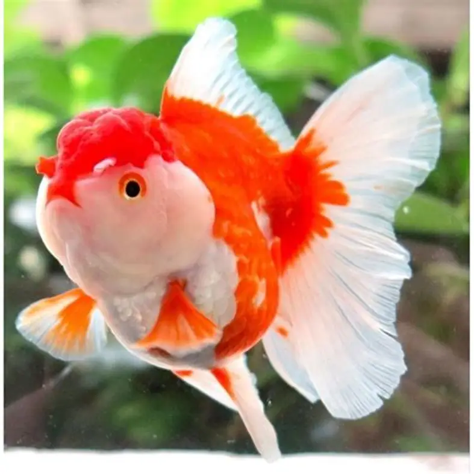
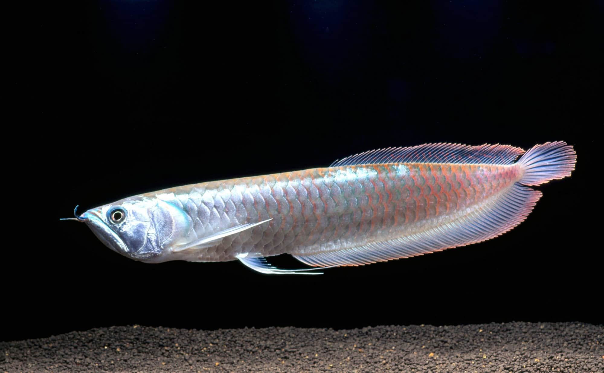
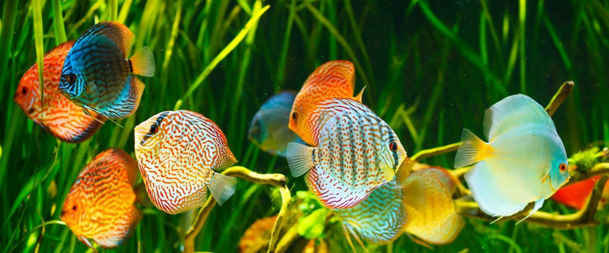

Bienvenidos a Mundo de los Peces
Mundo de los Peces nace con la idea de compartir información sobre el fascinante mundo de los acuarios y las diferentes especies de peces. Nuestro objetivo es ayudar a las personas a conocer sus cuidados, alimentación, compatibilidad y las condiciones necesarias para mantener un acuario saludable.
Conoce nuestras especies
En Mundo de los Peces encontrarás información sobre peces orientales como los Goldfish y Koi, además de diferentes especies tropicales. También aprenderás sobre sus características, necesidades y compatibilidad con otros peces.
Nuestros servicios
En Mundo de los Peces ofrecemos información y orientación para el cuidado adecuado de los peces y acuarios.
- Cuidados y alimentación de peces
- Compatibilidad entre especies
- Mantenimiento de acuarios
Galería de Mundo de los Peces
Conoce algunas de las especies de peces ornamentales y descubre la belleza del mundo de los acuarios.


